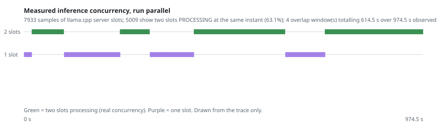

NTP Novi Sad Hackathon 2026 · EINSTEIN track · solo entry
Four Mozaik agents work a company's technical challenge at the same time, on one local model. The system proposes a researcher only when it can quote its sources, and it abstains out loud when it cannot.
A match and a coincidence look identical from the outside. Two documents sharing the word "anomaly" is not a link between a researcher and a factory floor, and two HTTP requests in flight is not two agents thinking at the same time. The same discipline is applied twice: to what the system says about the world, and to what it says about itself.
A system that cannot refuse cannot be trusted when it accepts.
Equal-resource comparison, the same 24 cases in every arm, one frozen source digest throughout. Independent verdict PASS on 12 of 12 blocks and 72 of 72 case-arms, with 264 source claims re-checked against the raw files.
| Arm | Agents | Accepted | Controls refused | Wall time | Peak slots |
|---|---|---|---|---|---|
| Solo | 1 | 12 / 24 | 6 / 6 | 67.0 min | 1 |
| Serial roles | 4 | 12 / 24 | 6 / 6 | 67.1 min | 1 |
| Parallel roles | 4 | 9 / 24 | 6 / 6 | 54.6 min | 2 |
Concurrency bought 18.5 % of wall time and cost three accepted cases out of twenty-four. There is no quality advantage here. There is a measured loss, and we publish it as it came out.
What makes that gap readable is the control pair: solo and serial agree on all 24 cases, while the parallel arm differs on 3. If the protocol were noisy, the two sequential arms would disagree too. They do not, so the difference is attributable to concurrency. All three arms refuse all six missing-evidence controls, so refusal does not depend on the architecture.
A plausible mechanism, offered as a hypothesis and not as a finding: two inferences sharing four CPU threads make each call slower, so more calls hit the per-call deadline. The parallel arm also issues 61 model calls against 73. Testing it would need the deadline relaxed, which would no longer be an equal-budget comparison.
The verifier does not accept client-side appearances. A run passes only with two
distinct Mozaik producer IDs, overlapping task intervals, and a timestamp inside that
overlap at which two distinct llama.cpp slots are both in PROCESSING. A
negative control that deletes all slot evidence must be rejected, and is.
5009 of 7933 slot samples show two slots busy 63.1 % of observed compute 614.5 s across 4 windows client-only false concurrency rejected same-agent false concurrency rejected

python3 scripts/concurrency_figure.py runs/benchmark-v2/block-1/parallel
evidence/concurrency-block1-verified.git clone https://github.com/monkidy/einstein-matchmaker
cd einstein-matchmaker
npm ci --ignore-scripts
python3 scripts/prepare_data.py
python3 scripts/fetch_runtime.py
npm test # expect 28/28
python3 scripts/run_local.py node src/cli.mjs demo